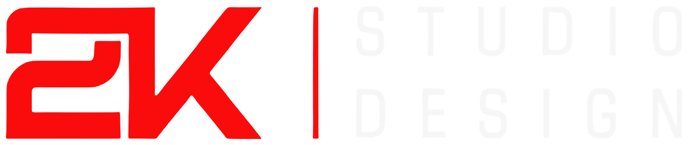
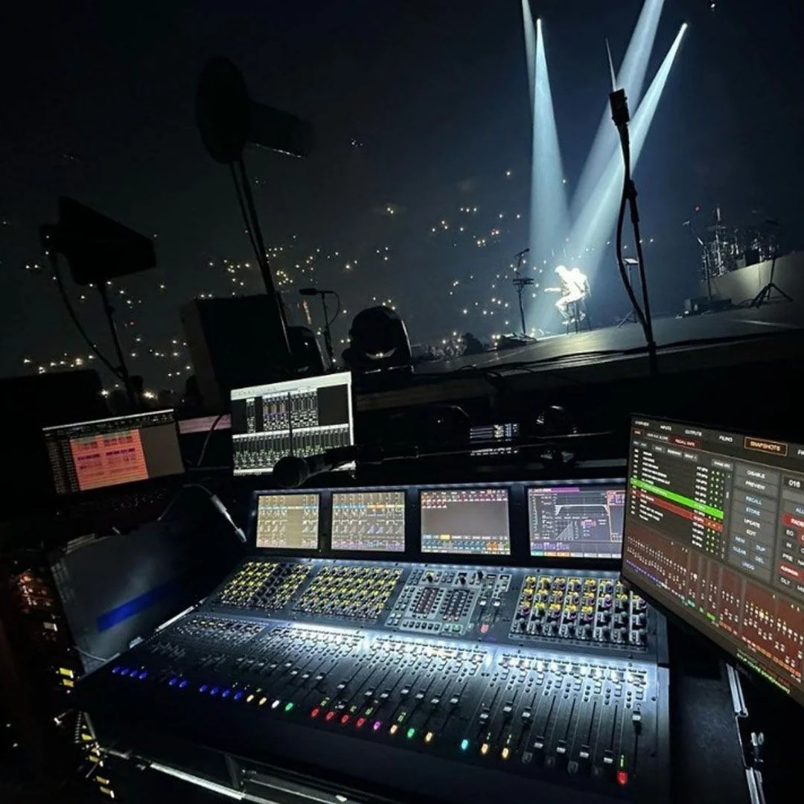

Todo palco começa
com uma conversa.
O artista, o evento, a intenção. É daqui que nasce a direção do projeto.

Vamos criar↗Luz, design e tecnologia para transformar
ideias em experiências que ficam.
Somos a 2K DESIGN. Unimos direção criativa, luz e visualização 3D para dar forma a palcos e experiências visuais. Criatividade que encontra a técnica. Ideias que encontram o público.
Conheça o estúdio ↗Projetos que saem da imaginação
e ganham o palco.
Um olhar criativo sobre cada detalhe.
Uma visão completa do espetáculo.
O conceito que conecta tudo. Construímos a linguagem visual do projeto em diálogo com a identidade do artista, a proposta do evento e a experiência do público.
A luz também conta a história. Atmosfera, contraste, cor e movimento se encontram em composições visuais pensadas para cada espetáculo.
Ideias que ocupam o espaço. Desenvolvemos palcos, cenários e elementos visuais para shows, DVDs, festivais e grandes eventos.
Antes de chegar ao palco, o projeto ganha forma. A visualização 3D permite explorar proporções, perspectivas e a integração dos elementos da experiência.
O artista, o evento, a intenção. É daqui que nasce a direção do projeto.
Linguagem, referências e conceito visual se encontram em uma ideia com identidade.
O projeto em 3D revela escala, composição e possibilidades para o palco.
O desenvolvimento aproxima a visão criativa dos detalhes necessários à realização.
Artistas e projetos que fazem parte
do universo 2K.

2K DESIGN / CRIATIVIDADE EM CENAArquitetos de experiências.
Apaixonados pelo espetáculo.
Fundada por Kaká Samora, a 2K nasceu para transformar shows, festivais e DVDs em experiências visuais marcantes. Um encontro entre criatividade, tecnologia e paixão pela arte.
Trabalhamos em colaboração, da concepção ao desenvolvimento do projeto, com atenção aos detalhes que dão identidade a cada palco.
Uma ideia, um artista, um novo palco.
Conta pra gente o que você está imaginando.